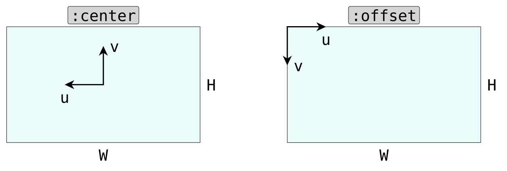
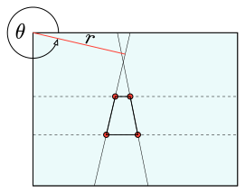

Camera Model
We use the pinhole camera model without any distortion. We implement two projection plane reference frames: :centered and :offset, which are defined as illustrated here:

We also support defining the camera model either through CameraConfig or through CameraMatrix.
:offset vs :centered
using RunwayLib, Unitful.DefaultSymbols, Rotations
cam_pos = WorldPoint(-10m, 0m, 0m)
cam_rot = RotZYX(zeros(3)...)
world_pt = WorldPoint(0m, 0m, 0m)
focal_length = 25mm
pixel_size = 5μm/px
camconf_centered = CameraConfig{:centered}(focal_length, pixel_size, 4096.0px, 2048.0px)
project(cam_pos, cam_rot, world_pt, camconf_centered)2-element WorldPoint{Float64{pixel}} with indices SOneTo(2):
0.0 pixel
0.0 pixelWith an offset camera model:
camconf_offset = CameraConfig{:offset}(focal_length, pixel_size, 4096.0px, 2048.0px)
project(cam_pos, cam_rot, world_pt, camconf_offset)2-element WorldPoint{Float64{pixel}} with indices SOneTo(2):
2048.0 pixel
1024.0 pixelAnd for a non-centered point:
world_pt2 = WorldPoint(0m, 1m, 1m)
project(cam_pos, cam_rot, world_pt2, camconf_centered)2-element WorldPoint{Float64{pixel}} with indices SOneTo(2):
500.0 pixel
500.0 pixelproject(cam_pos, cam_rot, world_pt2, camconf_offset)2-element WorldPoint{Float64{pixel}} with indices SOneTo(2):
1548.0 pixel
524.0 pixelLine Projections
For :offset camera models, we also currently support line features. Lines are specified with respect to a reference point chosen to be the "offset origin" and parameterized by their Hough transform, i.e., the angle and radius.

Reference
RunwayLib.project — Function
function project(
cam_pos::WorldPoint{T}, cam_rot::RotZYX, world_pt::WorldPoint{T′},
camconfig::CameraConfig{S}=CAMERA_CONFIG_OFFSET
) where {T,T′,S}Project 3D world point to 2D image coordinates using pinhole camera model. See Camera Model for more information.
sourcefunction project(
cam_pos::WorldPoint{T}, cam_rot::RotZYX, world_pt::WorldPoint{T′},
camconfig::CameraMatrix{S,U}
) where {T,T′,S,U}Version dispatching on CameraMatrix.
RunwayLib.CameraConfig — Type
struct CameraConfig{S} <: RunwayLib.AbstractCameraConfig{S}Camera configuration with reference frame S being either :offset or :centered. Check Camera Model for further explanation.
Fields
focal_length_px::Unitful.Quantity{Float64, NoDims, Unitful.FreeUnits{(pixel,), NoDims, nothing}}image_width::Unitful.Quantity{Float64, NoDims, Unitful.FreeUnits{(pixel,), NoDims, nothing}}image_height::Unitful.Quantity{Float64, NoDims, Unitful.FreeUnits{(pixel,), NoDims, nothing}}
Examples
using RunwayLib, Unitful.DefaultSymbols, Rotations
cam_pos = WorldPoint(-10m, 0m, 0m)
cam_rot = RotZYX(zeros(3)...)
world_pt = WorldPoint(0m, 0m, 0m)
focal_length = 25mm
pixel_size = 5μm/px
camconf_centered = CameraConfig{:centered}(focal_length, pixel_size, 4096.0px, 2048.0px)
project(cam_pos, cam_rot, world_pt, camconf_centered); nothingRunwayLib.CameraMatrix — Type
struct CameraMatrix{S,T<:WithDims(px)} <: AbstractCameraConfig{S}Camera model using 3x3 projection matrix with uniform pixel units. The reference frame S can either be :offset or :centered. See Camera Model for more explanation.
Notably it is the users responsibility to construct the matrix such that the axes are aligned correctly, i.e., for S=:offset the first two offdiagonal elements must be negative.
Examples
using StaticArrays, RunwayLib
f_px = 5e6px # focal length in pixels
cx, cy = 2048px, 1024px
matrix = SA[
-f_px 0px cx
0px -f_px cy
0px 0px 1px
]
CameraMatrix{:offset}(matrix, 2cx, 2cy); nothingRelated Functions
See also project.